무선설비산업기사 (2010-03-14 기출문제)
1과목: 디지털 전자회로
1. 정류회로에서 맥동률(
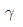
)을 표시하는 식으로 올바른 것은? (단, Idc는 직류출력 전류이고, Irms는 출력전류의 실효값이다.)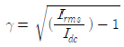
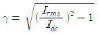
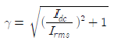
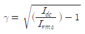
(정답률: 64%)

2. 다음은 초크입력형 평활회로의 특성이다. 맞지 않는 것은?
- 출력직류전압이 낮다.
- 전압변동률이 적다
- 첨두 역전압이 높다.
- 부하저항이 적을수록 맥동이 적다.
(정답률: 80%)
3. 다음 그림은 궤환형 정전압 회로의 기본 구성도이다. 빈칸에 들어갈 내용으로 옳은 것은?
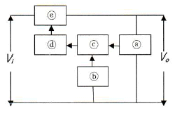
- ⓐ검출부, ⓑ제어부, ⓒ비교부, ⓓ증폭부, ⓔ기준부
- ⓐ검출부, ⓑ기준부, ⓒ비교부, ⓓ증폭부, ⓔ제어부
- ⓐ검출부, ⓑ기준부, ⓒ비교부, ⓓ제어부, ⓔ증폭부
- ⓐ검출부, ⓑ제어부, ⓒ비교부, ⓓ기준부, ⓔ증폭부
(정답률: 66%)
4. 이미터 접지형 증폭기에서 베이스 접지시의 전류증폭률 α=0.9, ICO=0.1[mA]일 때 컬렉터 전류는 얼마인가? (단, IB=0.5[mA]이다.)
- 0.9[mA]
- 4.5[mA]
- 5.5[mA]
- 9.2[mA]
(정답률: 50%)
5. 다음 회로에서 Re의 값과 관계가 없는 것은?
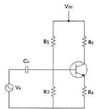
- Re가 크면 클수록 입력 임피던스는 커진다.
- Re가 크면 클수록 안정계수 S는 적어진다.
- Re가 크면 클수록 증폭된 컬렉터 전류는 적어진다.
- Re가 크면 클수록 전압증폭도는 커진다.
(정답률: 68%)
6. 다음 중 연산 증폭기의 특성과 관련이 없는 것은?
- 높은 이득
- 낮은 CMRR
- 높은 입력 임피던스
- 낮은 출력 임피던스
(정답률: 80%)
7. 완충증폭기로 A급 증폭기를 많이 사용하는 이유는 무엇인가?
- 능률이 좋다.
- 조정이 쉽다.
- 기생진동이 없다.
- 안정된 증폭을 한다.
(정답률: 76%)
8. 무선송신기의 발진기 조건으로 맞지 않는 것은?
- 주파수 안정도가 높을 것
- 고조파 발생이 적을 것
- 부하의 변동에 영향이 클 것
- 주파수의 미세조정이 용이할 것
(정답률: 75%)
9. 하틀리 발진기에서 궤환 요소에 해당하는 것은?
- 저항성
- 용량성
- 유도성
- 유도성 또는 용량성
(정답률: 79%)
10. AM 피변조파의 반송파, 상측파대, 하측파대의 각 전력성분의 비는? (단, m은 변조도이다.)
- 1 : /m2/2 : /4
- 1 : m2/4 : m2/2
- 1 : m2/2 : m2/2
- 1 : m2/4 : m2/4
(정답률: 66%)
11. 다음 중 디지털 변조방식에 속하는 것은?
- DSB
- SCFM
- PM
- QAM
(정답률: 70%)
12. 슈미트 트리거(Schmitt trigger) 회로의 특성으로 옳은 것은?
- 쌍안정 멀티바이브레이터의 일종이다.
- S/N(신호대잡음비)을 향상시킬 수 있다.
- 트리거 발진기로 주로 사용된다.
- 구형파 입력으로 삼각파 출력이 된다.
(정답률: 57%)
13. 다음 중 클램핑(Clamping) 회로에 대한 설명으로 옳은 것은?
- 삼각파 발생회로이다.
- 구형파 발생회로이다.
- 파형의 상부와 하부 두 레벨을 동시에 잘라내는 회로이다.
- 출력 신호의 상부 또는 하부 레벨을 일정하게 유지하는 회로이다.
(정답률: 72%)
14. 3초과 코드 0111의 10진수 값과 그레이(gray code) 0111의 10진수 값을 각각 나열한 것은?
- 4, 5
- 5, 6
- 6, 7
- 7, 8
(정답률: 81%)
15. 다음 식을 간소화 한 것으로 옳은 것은?
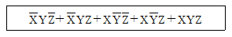
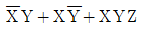
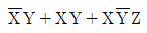
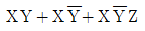
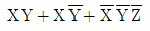
(정답률: 59%)
16. 다음 논리회로도가 나타내는 카운터는 무엇인가?
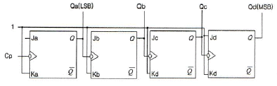
- 4비트 2진 상향카운터
- 4비트 2진 하향카운터
- 4비트 2진 상향/하향카운터
- 4비트 mod-2진 카운터
(정답률: 78%)
17. 다음의 회로에서 가정용 전원의 주파수 60[Hz]인 정현파를 적용했을 때 최종 구형파의 출력 주파수(fO)는?
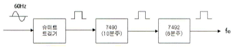
- 0.5[Hz]
- 1[Hz]
- 1.5[Hz]
- 2.0[Hz]
(정답률: 62%)
18. 다음 회로 중 한자리 반감산기로 실행할 때, 피감수 X=1, 감수 Y=1인 회로의 구성으로 옳은 것은?
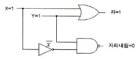
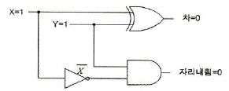
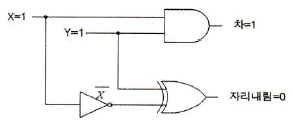
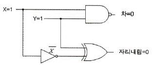
(정답률: 59%)
19. 클럭펄스에 관계없이 비동기 입력을 가진 J-K 플립플롭의 논리회로도로 올바른 것은?
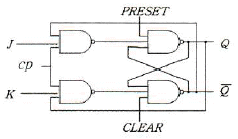
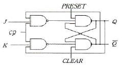
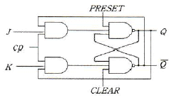
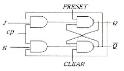
(정답률: 50%)
20. 다음 중 데이터 비트를 콘덴서에 저장하여 고밀도칩을 구성하고, 일정한 시간이 지나면 저장된 데이터가 소멸되어 재충전이 필요한 기억장치는 무엇인가?
- DRAM
- SRAM
- ROM
- EPROM
(정답률: 64%)
2과목: 무선통신 기기
21. 다음은 SSB 무선송신기의 장점이다. 맞지 않은 것은?
- 점유주파수대폭이 넓어진다.
- 소비전력이 적다.
- 선택성페이딩의 영향이 적다.
- S/N비가 개선된다.
(정답률: 72%)
22. 다음 회로 중 FM 변조파에서 음성신호를 복조하는 기능을 수행하는 회로의 명칭은 어느 것인가?
- 스켈치(Squelch) 회로
- Foster_Seeley 회로
- 리미터(Limitter) 회로
- Pre-emphasis 회로
(정답률: 65%)
23. 디지털 변복조기에 사용하는 변조 기술이 아닌 것은?
- ASK
- FSK
- QAM
- PM
(정답률: 79%)
24. 잡음이 존재하는 통신로에서 부호 오률의 특성이 가장 좋은 디지털 변조 방식은?
- 8진 QAM
- 8진 PSK
- 8진 FSK
- 8진 ASK
(정답률: 82%)
25. 일반적으로 송신기와 수신기를 이용하여 신호를 전송할 때 다이버시티 방식을 적용하여 통신하는데 이 중 해당하지 않는 것은?
- 페이딩 다이버시티
- 공간 다이버시티
- 시간 다이버시티
- 호핑 다이버시티
(정답률: 57%)
26. 다양한 통신 시스템에서 안테나는 상호간의 송ㆍ수신하기 위한 기본 요소이다. 다음 중 안테나의 파라미터에 해당하지 않는 것은?
- 실효 복사전력
- 전압 정재파비
- 안테나 편파
- 안테나 전원장치
(정답률: 78%)
27. 통신시스템에서 신호강도와 전송된 후의 신호강도를 측정하는 단위로 [dB]를 사용하는데 이 때, 등방성 안테나 이득을 표현할 때의 단위는?
- dBi
- dBm
- dBW
- dB
(정답률: 85%)
28. 다음 중 CDMA 방식의 장점이 아닌 것은?
- 제어와 비화 기술의 적용이 용이하다.
- 주파수 밀도가 감소된다.
- 변ㆍ복조의 동작 속도가 저속이다.
- 다중 경로의 영향이 크게 감소된다.
(정답률: 65%)
29. 극판의 연결 상태나 전지의 연결 상태의 차이로 생기는 충전 부족을 보충하기 위해 하는 충전은?
- 과 충전
- 평상 충전
- 균등 충전
- 부동 충전
(정답률: 83%)
30. 다음 그림에서 (A), (B), (C)에 들어갈 파형의 종류를 올바르게 나타낸 것은? (단, (C)는 출력제어방식이 PWM인 인버터 출력이다.)
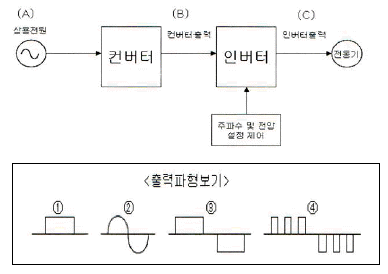
- A=①, B=②, C=③
- A=②, B=①, C=④
- A=①, B=②, C=④
- A=②, B=①, C=③
(정답률: 82%)
31. 다음 중 전력변환장치가 아닌 것은?
- 인버터(Inverter)
- 컨버터(Converter)
- UPS(Uninterruptible Power Supply)
- 파워써플라이(Power Supply)
(정답률: 74%)
32. 다음 중 FM 송신기의 전력 측정 방법으로 적합하지 않은 것은?
- 열량계에 의한 방법
- C-M형 전력계에 의한 방법
- 수부하에 의한 방법
- 볼로미터 브리지에 의한 방법
(정답률: 77%)
33. 다음 그림은 FM 송신기의 신호대 잡음비의 측정구성도를 나타낸 것이다. (A)에 들어가야 하는 것은?
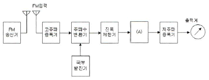
- 직선검파기
- 주파수변별기
- 가변감쇠기
- 수신기
(정답률: 78%)
34. 이동통신시스템의 무선채널에서 BER(비트오율)에 영향을 주는 요소와 거리가 먼 것은?
- 누화
- 페이딩
- 간섭
- 잡음
(정답률: 58%)
35. 다음 그림에서 나타낸 접지 안테나에서 L1=10[mH]이고 L2=52[mH]일 때 실효인덕턴스는? (단, f2=(1/2)f1로 조정하였고 f1은 S를 ①로 했을 때 공진주파수, f2는 S를 ②로 했을 때 공진주파수이다.)
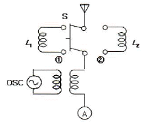
- 4[mH]
- 6[mH]
- 8[mH]
- 10[mH]
(정답률: 48%)
36. 특성임피던스 Zo가 75[Ω]인 선로 종단에 Zo보다 적은 부하저항을 접속한 후 송신단자에서 신호를 인가하였다. 이때 선로상의 파형을 측정하였더니 최고전압이 25[V], 최저전압이 5[V]이였다. 이 선로의 전압정재파비(VSWR)은 얼마인가?
- 4
- 5
- 6
- 8
(정답률: 75%)
37. 마이크로파 송신기의 전력 측정에 사용되는 방향성 결합기를 이용하여 측정할 수 없는 것은?
- 반사계수
- 위상차
- 부하의 정합상태
- 결합도
(정답률: 69%)
38. 전원장치의 출력 직류전압이 50[V], 출력 교류전압이 1[V]인 경우 이 전원장치의 맥동율은 몇 [%] 인가?
- 0.5
- 1
- 2
- 5
(정답률: 63%)
39. GPS는 인공위성에서 발신하는 신호를 이용한 장치이다. 인공위성은 어떤 궤도를 이용하는가?
- 정지위성궤도(고도: 약 36,000[km])
- 중궤도(고도: 약 20,000[km])
- 중저궤도(고도: 약 10,000[km])
- 저궤도(고도: 약 1,000[km])
(정답률: 58%)
40. 다음 중 송신기의 스퓨리어스 발사를 줄이는 방법으로 적합하지 않은 것은?
- 전력 증폭기의 동작각을 크게 한다.
- 출력결합회로의 Q를 높인다.
- 저조파에 대한 트랩(Trap) 회로를 삽입한다.
- 송신기와 급전선 사이에 HPF를 삽입하여 고조파를 제거한다.
(정답률: 58%)
3과목: 안테나 개론
41. 일반적으로 전파에 대한 설명으로 바른 것은?
- 전계와 자계가 X축 방향의 성분만 있는 경우를 말한다.
- 전파의 진행방향에는 전계와 자계가 없고 진행방향의 직각방향에는 전계와 자계가 존재한다.
- 전계와 자계는 X, Y, Z축 전체에 모두 존재한다.
- 전계는 Z축, 자계는 Y축에 존재하는 파를 말한다.
(정답률: 72%)
42. 맥스웰 방정식에서
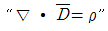
에 대한 설명으로 바른 것은?- 자계의 변화가 없으면 자계의 형태로 존재한다.
- 변화하는 전계에 의해 수직방향의 자계가 발생한다.
- 자계의 발생은 전하의 이동과 관련 없다.
- 전계는 전하에 의해 형성된다.
(정답률: 65%)
43. 동조 급전선에서 송신기의 결합회로와 급전선과의 접속점이 정재파 전류의 파복이 되는 경우에 결합회로의 공진회로는 어떻게 해야 하나?
- 직병렬 공진회로
- 병렬 공진회로
- 직렬 공진회로
- 직결합 회로
(정답률: 56%)
44. 특성 임피던스가 75[Ω]인 급전선상의 VSWR(전압정재파비)가 4라면 반사계수는 얼마인가?
- 0.2
- 0.4
- 0.6
- 0.8
(정답률: 75%)
45. 도파관에 대한 설명으로 잘못된 것은?
- 원형 도파관은 기본자태가 TE11이다.
- 구형 도파관은 기본자태가 TM10이다.
- 도파관에서 차단주파수 이하 주파수는 고역통과필터(HPF)로 동작한다.
- 관내의 파장은 자유공간에서의 파장보다 길다.
(정답률: 62%)
46. 공중선을 도파관에 정합하는 경우 아래의 임피던스 정합 방법 중 적당하지 않은 것은?
- window에 의한 정합
- 무반사 종단기에 의한 정합
- post에 의한 정합
- 방향성 결합기에 의한 정합
(정답률: 63%)
47. 안테나의 실효 개구 면적이 큰 순서대로 올바르게 나열된 것은?
- 루프안테나 > 반파장 다이폴 안테나 > 등방성 안테나
- 반파장 다이폴 안테나 > 루프안테나 > 등방성 안테나
- 루프안테나 > 등방성 안테나 > 반파장 다이폴 안테나
- 반파장 다이폴 안테나 > 등방성 안테나 > 루프안테나
(정답률: 52%)
48. 다음 안테나 중에서 사용주파수 대역이 다른 안테나는?
- 반파장 다이폴 안테나
- Cassergrain 안테나
- Rhombic 안테나
- Zeppeline 안테나
(정답률: 61%)
49. 면적이 0.636[m2], 권수가 50회인 루프 안테나로 3[MHz] 전파를 복사시키려고 한다. 이 안테나의 복사저항은 약 얼마인가?
- 0.32[Ω]
- 1.5[Ω]
- 17.5[Ω]
- 21.5[Ω]
(정답률: 32%)
50. λ/2 다이폴 안테나에 대한 설명으로 틀린 것은?
- 실효길이는 λ/π이다.
- 복사 전계는
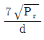
이다. - 전압 분포는 sin 분포를 나타내고, 전류 분포는 cos 분포를 나타낸다.
- 수직면 지향성은 ∞자 형이고, 수평면 지향성은 무지향성이다.
(정답률: 49%)
51. 파라볼라 안테나에 대한 특징으로 잘못된 것은?
- 비교적 구조가 간단하고 만들기가 쉽다.
- 지향성이 예리하고 이득이 높다.
- 주로 극초단파 고정통신 및 레이더 등에 이용된다.
- 광대역 임피던스 정합이 용이하고 대역폭이 넓다.
(정답률: 50%)
52. 전리층을 이용하는 통신에서 발생하는 감쇠에 대한 설명으로 올바른 것은?
- 제1종 감쇠는 수직입사에 가까울수록 커진다.
- 제1종 감쇠량은 주파수의 제곱에 반비례한다.
- 제2종 감쇠량은 평균 충돌횟수에 반비례한다.
- 제2종 감쇠는 전파가 전리층을 통과할 때 받는 감쇠이다.
(정답률: 47%)
53. 어느 송ㆍ수신소 사이의 MUF(Maximum Useful Frequency)가 10[MHz]일 때 FOT(Frequency f Optimum Transmission)는 얼마인가?
- 6.55[MHz]
- 7.5[MHz]
- 8.5[MHz]
- 9.5[MHz]
(정답률: 67%)
54. 주어진 기지국과 이동국 사이의 거리 이내에서 이동국이 그 주변으로 이동할 때 지형의 변화로 인해 발생하는 페이딩은 어느 것인가?
- Short term fading
- Long term fading
- Rician fading
- Rayleigh fading
(정답률: 63%)
55. 두 개 이상의 안테나를 서로 떨어진 곳에 설치하고 두 출력을 합성하여 페이딩을 방지하는 방식은?
- 공간 다이버시티
- 주파수 다이버시티
- 편파 다이버시티
- 분할 다이버시티
(정답률: 84%)
56. 대기 중의 와류에 의하여 유전율이 불규칙한 공기뭉치가 발생함에 따라 입사 전파의 산란에 의해서 발생하는 페이딩은?
- 감쇠형 페이딩
- 신틸레이션 페이딩
- K형 페이딩
- 덕트형 페이딩
(정답률: 70%)
57. 레이더의 안테나로부터 목표물을 향하여 전파를 발사하여 수신하는데 0.1[μs]가 걸렸다면 목표물까지의 거리는 얼마인가?
- 5[m]
- 15[m]
- 25[m]
- 35[m]
(정답률: 68%)
58. 다음 중 초단파 통신에서 수신점 전계강도에 영향이 가장 적은 것은?
- 사용 주파수
- 통신 거리
- 전리층 높이
- 송수신 안테나의 높이
(정답률: 45%)
59. 중파방송에서 주로 사용되는 전파방식은?
- 공간파
- 지표파
- 회절파
- 직접파
(정답률: 66%)
60. 마이크로파 대의 전송선로로 도파관을 사용하는 이유가 아닌 것은?
- 대전력용으로 사용된다.
- 외부 전자계와 완전히 결합된다.
- 방사손실이 없다.
- 유전체 손실이 적다.
(정답률: 74%)
4과목: 전자계산기 일반 및 무선설비기준
61. 중앙처리장치가 기억장치 혹은 I/O 장치와의 사이에 신호를 전송하기 위한 신호선들의 집합은?
- 시스템 버스(system bus)
- 주소 버스(address bus)
- 데이터 버스(data bus)
- 제어 버스(control bus)
(정답률: 83%)
62. 주변장치의 입출력 방식에서 마이크로컴퓨터인 PC의 입출력 접근방식이 아닌 것은?
- 채널 접근 입출력 방식
- 프로그램에 의한 입출력 방식
- 인터럽트 구동 입출력 방식
- DMA 입출력 방식
(정답률: 31%)
63. 다음 중 "0"에 대응되는 비트만 클리어 되는 동작은?
- OR 명령
- AND 명령
- 배타적 OR 명령
- 시프트 명령
(정답률: 54%)
64. 수치 자료에 대한 부동 소수점 표현(Floaing point representation)에 관한 설명 중 틀린 것은?
- 고정 소수점 표현보다 표현의 정밀도를 높일 수 있다.
- 아주 작은 수의 표현보다 아주 큰 수의 표현에만 적합하다.
- 과학, 공학, 수학적인 응용에 주로 사용되는 표현 방법이다.
- 수의 표현에 필요한 자릿수에 있어서 효율적이다.
(정답률: 78%)
65. 원시 프로그램에서 나타난 토큰의 열을 그 언어의 문법에 맞도록 만든 트리(tree)는?
- parse tree
- binary tree
- binary search tree
- skewed tree
(정답률: 51%)
66. 다중-사용자 또는 다중-작업시스템에서 주기억장치의 관리를 위하여 운영체제가 해야할 일이 아닌 것은?
- 각 프로세서에게 주기억장치를 얼마나 할당할 것인가를 결정
- 주기억장치 용량이 부족할 때 주기억장치에 적재되어 있는 현재 사용중인 부분을 선택하여 보조기억장치에 옮겨 놓는 일
- 주기억장치의 빈 공간이 어디에 얼마나 있는지를 기록, 유지하는 일
- 각 프로세서가 자신에게 할당된 영역이 아닌 다른 부분에 접근할 때 이를 보호하는 일
(정답률: 73%)
67. 다음은 SJF 스케줄링에 대한 설명이다. 틀린 것은?
- 선점형 스케줄링 기법이다.
- SJF 스케줄링을 변형시킨 방법이 SRT 스케줄링 기법이다.
- 처리해야 할 작업의 시간이 가장 적은 프로세서가 가장 먼저 CPU를 할당 받는다.
- 작업들이 시스템을 통과할 때 최소 평균 대기 시간을 제공한다.
(정답률: 47%)
68. 김씨는 인터넷에서 프로그램을 다운 받아 무료로 자유롭게 복사, 배포하고 있다. 이렇게 사용되도록 허가된 프로그램을 무엇이라고 하는가?
- 세어웨어
- 프리웨어
- 데모버전
- 벤치마크
(정답률: 81%)
69. 병렬 프로세서의 한 종류로, 하나의 명령어로 여러 개의 값을 동시에 계산하는 방식을 일컫는 말은 무엇인가?
- SIMD
- 슈퍼스칼라
- 멀티스레딩
- FPGA
(정답률: 49%)
70. 마이크로프로세서의 성능을 나타내는 지표가 아닌 것은 무엇인가?
- MIPS
- FLOPS
- CPI
- DPI
(정답률: 53%)
71. 주소지정방식 중 명령어의 필드에 데이터의 주소를 지정하는 방식으로, 실제 피연산자를 얻기 위해 메인 메모리를 두 번 접근해야 하는 방식은 무엇인가?
- 베이스 어드레스
- 인덱스 어드레스
- 직접 어드레스
- 간접 어드레스
(정답률: 57%)
72. 인터럽트의 형태 중 입출력 장치, 타이밍 장치, 전원 등의 요인으로 발생하는 인터럽트를 무엇이라고 부르는가?
- UPS 인터럽트
- 외부 인터럽트
- 내부 인터럽트
- 소프트웨어 인터럽트
(정답률: 64%)
73. 다음 중 전자파 에너지가 전원선을 통하여 흐르는 것을 무엇이라고 하는가?
- 방사
- 전도
- 전류
- 유도
(정답률: 51%)
74. 다음 중 전파사용료 부과를 면제할 수 있는 대상에 해당하지 않는 무선국은?
- 전기통신 역무를 제공하기 위한 무선국
- 국가가 개설한 무선국
- 지방자치단체가 개설한 무선국
- 방송국 중 영리를 목적으로 하지 아니하는 무선국
(정답률: 69%)
75. “방송통신기기 형식검정ㆍ형식등록 및 전자파적합등록에 관한 고시”의 주무 부처는?
- 방송통신위원회
- 교육과학기술부
- 지식경제부
- 국토해양부
(정답률: 78%)
76. 다음 중 형식등록을 하여야 하는 무선설비의 기기로 맞는 것은?
- 디지털선택호출전용 수신기
- 네비텍스 수신기
- 경보자동화전화장치
- 주파수공용무선전화장치
(정답률: 52%)
77. 다음 중 공중선전력의 허용 편차로 틀린 것은?
- 텔레비전방송을 행하는 방송국의 송신설비 : 상한 10[%], 하한 20[%]
- 디지털텔레비전방송국의 송신설비 : 상한 5[%], 하한 5[%]
- 항공기용 구명무선설비 : 상한 50[%], 하한 20[%]
- 위성방송보조국의 송신설비 : 상한 10[%], 하한 20[%]
(정답률: 42%)
78. 다음 중 수신설비로부터 발사되는 전파의 세기는 수신 공중선과 전기적 상수가 같은 의사공중선회로를 사용하여 측정한 경우에 얼마 이하이어야 하는가?
- -67[dBmW]
- -54[dBmW]
- -44[dBmW]
- -30[dBmW]
(정답률: 46%)
79. 다음 중 ( )안에 알맞은 말은 무엇인가?
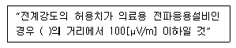
- 100[m]
- 80[m]
- 50[m]
- 30[m]
(정답률: 65%)
80. 다음 중 무선국 시설자는 통신보안용 약호를 정한 후 누구의 승인을 얻은 후 사용하여야 하는가?
- 방송통신위원회위원장
- 전파연구소장
- 중앙전파관리소장
- 한국전파진흥원장
(정답률: 74%)
이유는 출력전류가 직류이므로 최대값과 평균값이 같기 때문이다. 따라서 맥동률은 1이 된다.